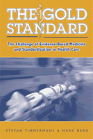

The first book to explore the effects of dramatic changes in the delivery of medical care
The first book to explore the effects of dramatic changes in the delivery of medical care


 The first book to explore the effects of dramatic changes in the delivery of medical care
The first book to explore the effects of dramatic changes in the delivery of medical care

|  |
The Gold StandardThe Challenge of Evidence-Based Medicine and Standardization in Health CareStefan Timmermans and Marc Bergpaper EAN: 978-1-59213-188-4 (ISBN: 1-59213-188-3) |
Winner of the Robert Merton Professional Book Award from the Science, Knowledge, and Society section of the American Sociological Association, 2005
"The Gold Standard is an engaging, well thought-out examination of a timely topic-evidence-based medicine. Timmermans and Berg raise taken-for-granted concepts such as power, objectivity, standardization, EBM and discuss them in innovative and complicated interpretations. The arguments presented here provide clarity on an important subject, highlighting the always interesting impact of unintended consequences."
—Alexandra Dundas Todd, Department of Sociology, Suffolk University, and author of Double Vision, An East-West Collaboration for Coping with Cancer
Few things make people react more strongly to the changes going on in health care than the word standardization. Critics shudder at the mindless sameness of standards, while supporters dream of a world in which standardized "best practices" open up a world of efficient health care delivery. The Gold Standard takes up this debate to investigate the real meaning of standardization and how it affects patients, doctors, and the institution of medicine.
Showing that standards are not about less or more skills, or more or less uniformity, but rather about a redefinition of autonomy, patients, and relationships, Timmermans and Berg show instead that they are about creating new worlds of medical treatment. Cutting through the hype and fears, the authors show where the true powers of standardization lie. The Gold Standard will become a classic for students of medicine and health care policy, and will be a welcome book for anyone concerned with the future of our system of care.
Excerpt available at www.temple.edu/tempress
"The Gold Standard is an intelligent and well-written analysis of crucial developments in biomedical practice over the past century. Timmermans and Berg provide us with a comprehensive study of the growing movement to standardize biomedicine, calling attention to the risks and benefits for doctors and patients alike. This unique and important book should attract interest among medical sociologists, science studies scholars, bioethicists, health policy analysts, and all those who care about the practice of medicine today."
—Steven Epstein, Department of Sociology, University of California, San Diego, and author of Impure Science: AIDS, Activism, and the Politics of Knowledge
"This book sets the standard for the study of standardization in medicine. Focusing on evidence based medicine's meteoric rise and influence, Timmermans and Berg go beyond the professional rhetoric to examine its impact on the practice of medicine. Well-written and replete with sociological case studies, this book is must reading for social scientists, physicians and policy-makers."
—Peter Conrad, Harry Coplan Professor of Social Sciences, Brandeis University
"It is rare to find a book that can serve both as an excellent introduction to its subject for people who have not previously given it much thought or study and also as an advanced reading for people who know the subject area well. Happily, The Gold Standard is such a book."
—The Journal of Legal Medicine
"This eminently readable book is recommended to healthcare industry personnel and to policy makers who would be interested in a thoughtful study of the political, ethical, and functional aspects of the standardization of clinical behavior."
—Quality Management in Health Care
"[T]his is a surprising work...its scope places it in the realm of monumental works like Paul Starr's Pulitzer-Prize winning [book]. This book is highly recommended...especially to those grappling with the challenge of creating consistently high-quality health care at a cost our nation can afford."
—Inquiry
"...a highly readable and comprehensive book.... I can recommend this book to everyone who is interested in the subject."
—Medicine Health Care and Philosophy: A European Journal (pdf)
"This book is helpful to physicians and healthcare executives who need to have a better understanding of the evolution and application of evidence-based medicine."
—The Journal of the National Medical Association
"The Gold Standard provides a powerful argument that the scientific is inevitably social and that the meanings of the social in standardization, ironically, eschew being standardized. It is a timely and important contribution to the sociology of medicine and the study of professions."
—The American Journal of Sociology
Acknowledgments
Introduction: The Politics of Standardization
1. Standardization in Medicine in the Twentieth Century: The Emergence of the Paper-Based Patient Record
2. Standards at Work: A Dynamic Transformation of Medicine
3. From Autonomy to Accountability? Clinical Practice Guidelines and Professionalization
4. Guidelines, Professionals, and the Production of Objectivity in Insurance Medicine
5. Evidence-Based Medicine and Learning to Doctor
6. Standardizing Risk: A Case Study of Thalidomide
Epilogue: The Quest for Quality
Notes
Bibliography
Index
 | Stefan Timmermans is Associate Professor of Sociology at Brandeis University, and author of Sudden Death and the Myth of CPR (Temple), which was nominated for the C. Wright Mills Book Award. |
 | Marc Berg is Professor of Social Medical Sciences at the Erasmus University Medical Center in The Netherlands, and author of Rationalizing Medical Work: A Study of Decision Support Techniques and Medical Practices. |
Health and Health Policy
Sociology
Philosophy and Ethics
© 2015 Temple University. All Rights Reserved. This page: http://www.temple.edu/tempress/titles/1670_reg.html.